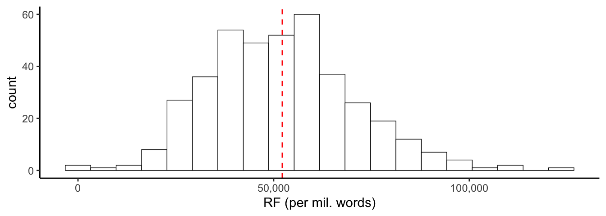
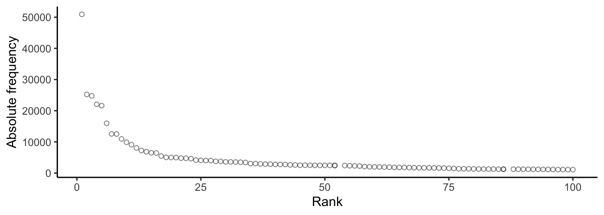

4 Distributions
4.1 Prepare a corpus
4.1.1 Load the needed packages
4.1.2 Load a corpus
The repository comes with some data sets. The conventional way to format text data prior to processing is as a table with a column of document ids (which correspond to the the file names) and a column of texts. Such a table is easy to create from text data on your own local drive using the package readtext.
To peek at the data, we’ll look at the first 100 characters in the “text” column of the first row:
| doc_id | text |
|---|---|
| acad_01 | Teachers and other school personnel are often counseled to use research findings in making curricula |
| acad_02 | Abstract Does the conflict in El Salvador, conceptualized by the U.S. government as a battle in the |
| acad_03 | January 17, 1993, will mark the 100th anniversary of the deposing of the Hawaiian monarchy. "Prior t |
| acad_04 | Thirty years have passed since the T1961 meeting of the National Council for the Social Studies in C |
| acad_05 | ABSTRACT -- A common property resource with open access, such as a fishery, will be used to excess w |
| acad_06 | Despite some encouraging signs and hopeful expectations that democracy has made reasonable progress |
| acad_07 | evaluation component. Similarly, Stewart ( 1982,1989 ) has shown that a common response to unfamilia |
| acad_08 | Section: Education "A lab is where you do science" ( Thornton 1972 ). An investigative laboratory ( |
| acad_09 | In 1968, the thirtieth anniversary issue of the Journal of Politics celebrated the great advance in |
| acad_10 | monologue -- and of Novas Calvo's story -- may thus be clarified, not as that of facilitating an obj |
4.1.3 Load functions
The repository also contains a number of useful functions. Here, will load some that will calculate a number of common dispersion measures.
source("../R/dispersion_functions.R")4.1.4 Create and corpus
Make a corpus object.
sc <- corpus(sample_corpus)And check the result:
| Text | Types | Tokens | Sentences |
|---|---|---|---|
| acad_01 | 842 | 2818 | 95 |
| acad_02 | 983 | 2845 | 88 |
| acad_03 | 968 | 2885 | 126 |
| acad_04 | 1017 | 2864 | 102 |
| acad_05 | 914 | 2837 | 109 |
| acad_06 | 1007 | 2813 | 86 |
| acad_07 | 663 | 2952 | 92 |
| acad_08 | 870 | 2830 | 118 |
| acad_09 | 980 | 2899 | 131 |
| acad_10 | 1118 | 2883 | 77 |
4.2 Document variables (Name your files systematically!)
File names can encode important meta-data. In this case, the names include text-types, much like the Corpus of Contemporary American English.
This is extremely important. When you build your own corpora, you want to purposefully and systematically name your files and organize your directories. This will save you time and effort later in your analysis.
We are now going to extract the meta-data from the file names and pass them as a variable.
doc_categories <- str_extract(sample_corpus$doc_id, "^[a-z]+")Check the result:
| doc_cats |
|---|
| acad |
| blog |
| fic |
| mag |
| news |
| spok |
| tvm |
| web |
We will now assign the variable to the corpus. The following command might look backwards, with the function on the left hand side of the <- operator. That is because it’s an accessor function, which lets us add or modify data in an object. You can tell when a function is an accessor function like this because its help file will show that you can use it with <-, for example in ?docvars.
docvars(sc, field = "text_type") <- doc_categoriesAnd check the summary again:
| Text | Types | Tokens | Sentences | text_type |
|---|---|---|---|---|
| acad_01 | 842 | 2818 | 95 | acad |
| acad_02 | 983 | 2845 | 88 | acad |
| acad_03 | 968 | 2885 | 126 | acad |
| acad_04 | 1017 | 2864 | 102 | acad |
| acad_05 | 914 | 2837 | 109 | acad |
| acad_06 | 1007 | 2813 | 86 | acad |
| acad_07 | 663 | 2952 | 92 | acad |
| acad_08 | 870 | 2830 | 118 | acad |
| acad_09 | 980 | 2899 | 131 | acad |
| acad_10 | 1118 | 2883 | 77 | acad |
Assigning docvars is based entirely on ordering. In other words, you are simply attaching a vector of categories to the corpus object. There is no merging by shared keys. Thus, you always need to be sure that your docvars are in the same order as your doc_ids. This is the reason why we extracted them directly from the doc_ids.
4.3 Tokenize the corpus
We’ll use quanteda to tokenize. And after tokenization, we’ll convert them to lower case. Why do that here? As a next step, we’ll being combining tokens like a and lot into single units. And we’ll be using a list of expressions that isn’t case sensitive.
sc_tokens <- tokens(sc, include_docvars=TRUE, remove_punct = TRUE, remove_numbers = TRUE, remove_symbols = TRUE, what = "word")
sc_tokens <- tokens_tolower(sc_tokens)4.4 Multi-word Expressions
An issue that we run into frequently with corpus analysis is what to do with multi-word expressions. For example, consider a common English quantifier: “a lot”. Typical tokenization rules will split this into two tokens: a and lot. But counting a lot as a single unit might be important depending on our task. We have a way of telling quanteda to account for these tokens.
All that we need is a list of multi-word expressions.
The cmu.textstat comes with an example of an mwe list called multiword_expressions:
| winter haven |
| with a view to |
| with reference to |
| with regard to |
| with relation to |
| with respect to |
The tokens_compound() function looks for token sequences that match our list and combines them using an underscore.
sc_tokens <- tokens_compound(sc_tokens, pattern = phrase(multiword_expressions))4.5 Create a document-feature matrix
With our tokens object we can now create a document-feature-matrix using the dfm() function. As a reminder, a dfm is table with one row per document in the corpus, and one column per unique token in the corpus. Each cell contains a count of how many times a token shows up in that document.
sc_dfm <- dfm(sc_tokens)Next we’ll create a dfm with proportionally weighted counts.
prop_dfm <- dfm_weight(sc_dfm, scheme = "prop")5 Token distributions
5.1 Distributions of the
Let’s start by selecting frequencies of the most common token in the corpus:
freq_df <- textstat_frequency(sc_dfm) %>%
data.frame(stringsAsFactors = F)| feature | frequency | rank | docfreq | group |
|---|---|---|---|---|
| the | 50920 | 1 | 399 | all |
| and | 25232 | 2 | 398 | all |
| to | 24753 | 3 | 397 | all |
| of | 22060 | 4 | 399 | all |
| a | 21614 | 5 | 398 | all |
| in | 15969 | 6 | 399 | all |
| i | 12568 | 7 | 348 | all |
| that | 12537 | 8 | 396 | all |
| you | 10951 | 9 | 341 | all |
| is | 9901 | 10 | 389 | all |
From the weighted dfm, we can select any token that we’d like to look at more closely. In this case, we’ll select the most frequent token: the.
After selecting the variable, we will convert the data into a more friendly data structure.
There are easier ways of doing this, but the first bit of the code-chunk allows us to filter by rank and return a character vector that we can pass. This way, we can find a word of any arbitrary rank.
Also note how the rename() function is set up. Let’s say our token is the. The dfm_select() function would result with a column named the that we’d want to rename RF. So our typical syntax would be: rename(RF = the). In the chunk below, however, our column name is the variable word. To pass that variable to rename, we use !!name(word).
word <- freq_df %>%
filter(rank == 1) %>%
dplyr::select(feature) %>%
as.character()
word_df <- dfm_select(prop_dfm, word, valuetype = "fixed") # select the token
word_df <- word_df %>%
convert(to = "data.frame") %>%
cbind(docvars(word_df)) %>%
rename(RF = !!as.name(word)) %>%
mutate(RF = RF*1000000)With that data it is a simple matter to generate basic summary statistics using the group_by() function:
| text_type | MEAN | SD | N |
|---|---|---|---|
| acad | 68619.64 | 18327.10 | 50 |
| blog | 51270.54 | 13389.38 | 50 |
| fic | 54202.41 | 14254.79 | 50 |
| mag | 57117.76 | 13986.30 | 50 |
| news | 50574.84 | 18333.09 | 50 |
| spok | 42693.44 | 9727.79 | 50 |
| tvm | 32532.85 | 11981.88 | 50 |
| web | 60592.68 | 21641.35 | 50 |
And we can inspect a histogram of the frequencies. To set the width of our bins we’ll use the Freedman-Diaconis rule. The bin-width is set to: \[h = 2 x \frac{IQR(x)}{n^{1/3}}\]
So the number of bins is (max-min)/h, where n is the number of observations, max is the maximum value and min is the minimum value.
Now we can plot a histogram. We’re also adding a dashed line showing the mean. Note we’re also going to use the scales package to remove scientific notation from our tick labels.
ggplot(word_df,aes(RF)) +
geom_histogram(binwidth = bin_width(word_df$RF), colour="black", fill="white", size=.25) +
geom_vline(aes(xintercept=mean(RF)), color="red", linetype="dashed", size=.5) +
theme_classic() +
scale_x_continuous(labels = scales::comma) +
xlab("RF (per mil. words)")Warning: Using `size` aesthetic for lines was deprecated in ggplot2 3.4.0.
ℹ Please use `linewidth` instead.
5.2 Distributions of the and of
Now let’s try plotting histograms of two tokens on the same plot. First we’re going to use regular expressions to select the columns. The carat or hat ^ looks for the start of line. Without it, we would also get words like “blather”. The dollar symbol $ looks for the end of a line. The straight line | means OR. Think about how useful this flexibility can be. You could, for example, extract all words that end in -ion.
# Note "regex" rather than "fixed"
word_df <- dfm_select(prop_dfm, "^the$|^of$", valuetype = "regex")
# Now we'll convert our selection and normalize to 10000 words.
word_df <- word_df %>%
convert(to = "data.frame") %>%
mutate(the = the*10000) %>%
mutate(of = of*10000)
# Use "pivot_longer" to go from a wide format to a long one
word_df <- word_df %>%
pivot_longer(!doc_id, names_to = "token", values_to = "RF") %>%
mutate(token = factor(token))Now let’s make a new histogram. Here we assign the values of color and fill to the “token” column. We also make the columns a little transparent using the “alpha” setting.
ggplot(word_df,aes(x = RF, color = token, fill = token)) +
geom_histogram(binwidth = bin_width(word_df$RF), alpha=.5, position = "identity") +
theme_classic() +
xlab("RF (per mil. words)") +
theme(axis.text = element_text(size=5))If we don’t want overlapping histograms, we can use facet_wrap() to split the plots.
ggplot(word_df,aes(x = RF, color = token, fill = token)) +
geom_histogram(binwidth = bin_width(word_df$RF), alpha=.5, position = "identity") +
theme_classic() +
theme(axis.text = element_text(size=5)) +
theme(legend.position = "none") +
xlab("RF (per mil. words)") +
facet_wrap(~ token)
6 Dispersion
We can also calculate dispersion, and there are a variety of measures at our disposal. Our toolkit has several functions for producing these calculations.
For example, we can find the dispersion of any specific token:
| Absolute frequency | 50920.000 |
| Per_10.5 | 5240.015 |
| Relative entropy of all sizes of the corpus parts | 1.000 |
| Range | 399.000 |
| Maxmin | 292.000 |
| Standard deviation | 45.926 |
| Variation coefficient | 0.361 |
| Chi-square | 6295.422 |
| Juilland et al.’s D (based on equally-sized corpus parts) | 0.982 |
| Juilland et al.’s D (not requiring equally-sized corpus parts) | 0.982 |
| Carroll’s D2 | 0.989 |
| Rosengren’s S (based on equally-sized corpus parts) | 0.963 |
| Rosengren’s S (not requiring equally-sized corpus parts) | 0.966 |
| Lyne’s D3 (not requiring equally-sized corpus parts) | 0.968 |
| Distributional consistency DC | 0.963 |
| Inverse document frequency IDF | 0.004 |
| Engvall’s measure | 50792.700 |
| Juilland et al.’s U (based on equally-sized corpus parts) | 50000.333 |
| Juilland et al.’s U (not requiring equally-sized corpus parts) | 50010.750 |
| Carroll’s Um (based on equally sized corpus parts) | 50342.268 |
| Rosengren’s Adjusted Frequency (based on equally sized corpus parts) | 49032.932 |
| Rosengren’s Adjusted Frequency (not requiring equally sized corpus parts) | 49185.689 |
| Kromer’s Ur | 2135.564 |
| Deviation of proportions DP | 0.139 |
| Deviation of proportions DP (normalized) | 0.139 |
And let’s try another token to compare:
| the | data | |
|---|---|---|
| Deviation of proportions DP | 0.139 | 0.846 |
6.1 Dispersions for all tokens
We can also calculate selected dispersion measures for all tokens using dispersions_all():
d <- dispersions_all(sc_dfm)| Token | AF | Per_10.5 | Carrolls_D2 | Rosengrens_S | Lynes_D3 | DC | Juillands_D | DP | DP_norm |
|---|---|---|---|---|---|---|---|---|---|
| the | 50920 | 5240.015 | 0.989 | 0.966 | 0.968 | 0.963 | 0.982 | 0.139 | 0.139 |
| and | 25232 | 2596.545 | 0.990 | 0.970 | 0.973 | 0.967 | 0.983 | 0.123 | 0.124 |
| to | 24753 | 2547.252 | 0.993 | 0.980 | 0.983 | 0.976 | 0.987 | 0.090 | 0.090 |
| of | 22060 | 2270.124 | 0.978 | 0.933 | 0.935 | 0.932 | 0.974 | 0.199 | 0.199 |
| a | 21614 | 2224.228 | 0.992 | 0.977 | 0.978 | 0.973 | 0.986 | 0.109 | 0.109 |
| in | 15969 | 1643.319 | 0.988 | 0.962 | 0.963 | 0.960 | 0.981 | 0.146 | 0.146 |
6.2 Generating a frequency table
Alternatively, frequency_table() returns only Deviation of Proportions and Average Reduced Frequency.
Note that ARF requires a tokens object and takes a couple of minutes to calculate.
ft <- frequency_table(sc_tokens)| Token | AF | Per_10.5 | ARF | DP | |
|---|---|---|---|---|---|
| 1 | the | 50920 | 5240.015 | 31901.106 | 0.139 |
| 2 | and | 25232 | 2596.545 | 15914.149 | 0.123 |
| 3 | to | 24753 | 2547.252 | 15468.494 | 0.090 |
| 5 | of | 22060 | 2270.124 | 13089.728 | 0.199 |
| 4 | a | 21614 | 2224.228 | 13239.704 | 0.109 |
| 6 | in | 15969 | 1643.319 | 9772.267 | 0.146 |
7 Zipf’s Law
Let’s plot rank against frequency for the 100 most frequent tokens in the sample corpus.
ggplot(freq_df %>% filter(rank < 101), aes(x = rank, y = frequency)) +
geom_point(shape = 1, alpha = .5) +
theme_classic() +
ylab("Absolute frequency") +
xlab("Rank")
The relationship you’re seeing between the rank of a token and it’s frequency holds true for almost any corpus and is referred to as Zipf’s Law (see Brezina pg. 44).